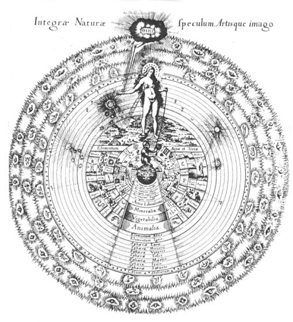
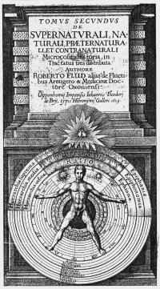
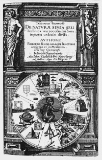
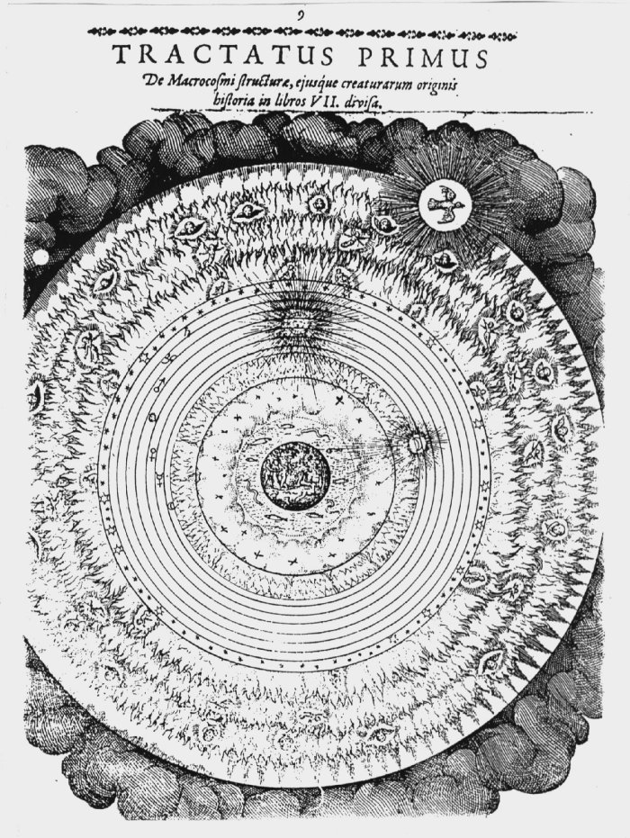

Inhoudsopgave
Tegen Marin Mersenne Inhoudsopgave
Tegen Marin Mersenne  De musica
mundana De musica
mundana
Utriusque cosmi ... historia
Vanwege de complexe structuur(1) van dit tussen 1617 en 1621 in vier delen door Johann
Theodore de Bry in Oppenheim gepubliceerde werk (in het vervolg UCH
genoemd), dat in totaal omstreeks 1700 foliopagina’s beslaat, lijkt het
mij niet onverstandig om eerst de structuur te beschrijven.
De titelpagina(2)(zie afbeelding 4) luidt als
volgt: ‘Metafysische, fysische en technische geschiedenis van beide
werelden, namelijk van de grote en de kleine (macro- en microcosmos). In twee
delen volgens het soort van kosmos verdeeld.’ (Utriusque cosmi maioris
scilicet et minoris metaphysica, physica atque technica historia. In duo
Volumina secundum Cosmi differentiam divisa.(3)).
Er zijn twee delen (volumina), welke elk op hun beurt
weer onderverdeeld zijn in verschillende tractaten, secties en porties. De
titels van de verschillende tractaten luiden als volgt:
1 - Eerste deel. Eerste tractaat (I, i.). Over de
metafysica van de macrocosmos en de oorsprong van haar schepselen. Over de
fysieke voortzetting van de macrocosmos in ontstaan en vergaan. Oppenheim,
Johann Theodore de Bry, 1617. (Tomus Primus. De Macrocosmi Historia in duos
tractatus divisa. Primus de Metaphysico Macrocosmi et Creaturarum illius ortu.
Physico Macrocosmi in generatione et corruptione progressu.(4))
2 - Eerste deel. Tweede tractaat (I, ii.). Over de aap
van de natuur, of over de technische geschiedenis van de macrocosmos, verdeeld
in 11 delen. Oppenheim, Johann Theodore de Bry, 1618. (Tomus Primus. De
Macrocosmi Historia in duos tractatus divisa. Tractatus secundus. De naturae
simia seu technica macrocosmi historia, in partes undecim divisa.(5))
3 - Tweede deel. (II, i.). Over de bovennatuurlijke,
natuurlijke, ‘voorbij-natuurlijke’ en tegennatuurlijke geschiedenis
van de microcosmos, in drie tractaten geordend. Oppenheim, Johann Theodore de
Bry, 1619. (Tomus secundus. De supernaturali, naturali, praeternaturali et
contranaturali microcosmi historia, in tractatus tres ditributa.(6))
4 - Tweede deel. Tweede tractaat (II, ii). Over de
‘voorbij-natuurlijke’ geschiedenis van de beide werelden. In drie
gedeelten. Oppenheim, Johann Theodore de Bry, 1621. (Tomi secundi tractatus
secundus. De praeternaturali utriusque mundi historia. In sectiones tres
divisa.(7))
In de beschrijving van de indeling van UCH bestaan er
verschillen in de literatuur, en dan met name in de beschrijving van de inhoud
van het tweede deel (Tomus Secundus - II). De titel hiervan (zie boven)
vermeldt: ‘in drie tractaten geordend’.
Zowel Joscelyn Godwin(8) als William H.
Huffman(9) merken over het derde
tractaat (wat zou zijn: II, iii.) op dat het nooit is gepubliceeerd. Horst
Atteln(10) daarentegen geeft
wèl een titel voor dit derde tractaat, dit is volgens Atteln een
appendix waarin Fludd zijn wereld-harmonie met die van Johannes Kepler
vergelijkt.(11) Nu zou het mogelijk
kunnen zijn dat deze verdediging overeenkomt met een van de polemische
geschriften van Fludd met Kepler en het in het door Atteln gebruikte exemplaar
van de UCH is terecht gekomen. In deze richting wijst bijvoorbeeld Peter
J. Ammann(12), daar hij opmerkt dat
Veritatis proscenium als appendix in UCH terecht is gekomen.
Veritas proscenium (geheel of een deel) zou dus heel goed Atteln’s
appendix analyticam kunnen zijn, maar dit is slechts door het bekijken
van de verschillende exemplaren in de diverse bibliotheken vast te stellen.
Hiernaast is de indeling van het tweede tractaat van het tweede deel (II, ii.)
volgens Atteln anders dan Godwin en Huffman het voorstellen (verder zijn er
geen verschillen): volgens Atteln bestaat II, ii. uit drie secties (die over
meteoren zouden moeten handelen(13)),
terwijl volgens Godwin en Huffman(14)
II, ii. uit twee secties zou bestaan, waarvan het tweede (II, ii-b.) nooit zou
zijn verschenen en het eerste (II, ii-a.) onderverdeeld zou zijn in vier
porties; en daarvan zouden de laatste twee porties oorspronkelijk onder andere
titels zijn verschenen, namelijk portio III als Anatomiae Amphitheatrum
(Oppenheim, J.T. de Bry, 1623) en portio IV als Philosophia Sacra
(ibid., 1626). Oorzaak voor deze veschillen is waarschijnlijk gelegen in het
feit dat genoemde auteurs zich baseren op exemplaren van Fludd’s werk uit
verschillende bibliotheken.
Zowel Atteln als Hutin noemen de bibliotheek waarin zij UCH bekeken
hebben(15); wat betreft Godwin en
Huffman, zij vermelden niet met name welke bibliotheek zij gebruikt hebben,
mogelijkerwijs was dit een of meer van de grote Engelse bibliotheken,
bijvoorbeeld in Cambridge, Oxford of Londen. Waarschijnlijk zijn betrokken
exemplaren bij het verschijnen van de afzonderlijke delen indertijd anders
gebundeld; hetzelfde probleem doet zich namelijk in Nederland voor: de inhoud
van exemplaren van de UCH in Maastricht en Leiden wijkt af van die in
Utrecht.(16)
II
Met ‘aap van de natuur’ (Naturae Simia),
titel en onderwerp van het tweede tractaat van het eerste deel (I, ii.), wordt
niets anders dan de mens bedoeld: de mens die in al zijn werken, hetzij
kunstzinnig, hetzij wetenschappelijk, slechts de werken van de door God
geschapen Natuur nabootst.

afb. 7 ‘Spiegel van de wereld' UCH. I,i. p.
4-5 | | In I, ii. behandelt Fludd dan ook de verschillende
‘werken’ van de mens, te weten (zie titelpagina UCH of
afbeelding 7 en 8): algebra, muziek, geometrie, optica,
beeldende kunsten, krijgs- kunst, werktuigbouwkunde, klokkenbouw (ook: zonne-
wijzers), kosmografie (cartografie van de hemel), astrologie en geomantie
(waarzeggerij door het trekken van lijnen in aarde of zand).(17)
UCH bevat een prachtige afbeelding van de ‘aap
van de natuur’ (zie afbeelding 7, met passer en wereld- bol(18)), een afbeelding waarop de gehele
wereld en de relaties tussen ma- crocosmos en microcosmos zijn weergegeven.
Maar behalve deze zijn er nog diverse andere plaatsen waar de ‘aap van de
na- tuur’ afgebeeld is. |
Interessant is bijvoorbeeld de titelpagina van het tweede
tractaat (I, ii. - zie afbeelding 8), waarop een aap als een schoolmeester met
een stok de aritmetica aanwijst, als het ware om aan te duiden dat alles
op getal gebaseerd is.(19)
Opmerkelijk is ook dat de kunsten die op de ‘Spiegel
van de gehele natuur en beeld van de Kunst’ (Integrae Naturae
Speculum, Artisque Imago - zie afbeelding 7) door Fludd Artes
liberaliores, ‘vrijere kunsten’, worden genoemd; zij omvatten
namelijk meer dan alleen het traditionele schoolprogramma, dat uit het
trivium (grammatica, logica en retorica) en het quadrivium
(aritmetica, musica, geometria en astronomia) bestond, welke tezamen de
septem artes liberales, de ‘zeven vrije kunsten’ werden
genoemd. Fludd voegt er namelijk bijvoorbeeld klokkenbouw (tempus) of
krijgskunst aan toe (in afbeelding 7 fortificatio geheten, rechts naast
‘artes liberaliores’). De aap in deze afbeelding (7) wijst niet op
de aritmetica, maar houdt een bol en een passer vast, mogelijkerwijs een
verwijzing naar het bijbelboek Wijsheid: ‘Maar Gij hebt alles naar maat
(passer), gewicht (bol) en getal geordend.’(20)
Men ziet echter ook (hoewel niet bijzonder nadrukkelijk) de
verwantschappen (correspondenties) die er tussen de verschillende sferen
aanwezig zijn: zo zijn bijvoorbeeld de metalen met de hemellichamenn verbonden;
goud is verwant aan de zon, saturnus aan lood en antimoon, de maan aan zilver
etc. Ook de mens deelt in deze verwantschappen, de man (homo - links in
de afbeelding) met de zon, de vrouw (mulier) met de maan. De
verwantschappen verbinden de drie werelden met elkaar.(21) Deze drie zijn: van de wereldbol tot het elementum
ignis het ‘ondermaanse’, de ‘hemel van de
elementen’ (coelum Elementaris), in het midden de sterrenhemel
(coelum Aethereum) en ten derde, geheel bovenaan het Empyreum, de
bovenwereldlijke woonplaats van de engelen. De vrouwelijke Natura wordt
door de buitenwereldlijke JHWH (God) in haar handelen geleid, op haar beurt
leidt zij de mens.
Afbeelding 9 toont de drie werelden op
prachtige wijze: in het midden de aarde (zichtbaar zijn Adam, Eva en de slang
in de tuin van Eden) en de vier elementen (aarde, water, lucht en vuur),
gevolgd door de sterrenhemel, die op zijn beurt weer omringd wordt door het
Empyreum, de ‘vuurhemel’ (empuros - ‘in het vuur’),
waar vuur, vlammen en engelen afgebeeld zijn. Daarachter is de buitenste
duisternis. De Geest Gods is gepersonifiëerd als een duif, op de grens van
vuur en chaos, maar lijkt zich ook daarboven te bevinden, als het ware om zijn
schepping te overzien.
De verwantschappen tussen mens (de microcosmos) en sterrenhemel (macrocosmos)
worden ook uitgedrukt op de titelpagina van UCH. Bijvoorbeeld de tekens
van de dierenriem, die de verschillende delen van het lichaam beheersen,
aries (ram) het hoofd, pisces (vissen) de voeten, etc. (zie
de stippellijntjes); de vier elementen zijn betrokken op de vier Galenische
‘lichaamssappen’ (humores), namelijk vuur op de gele gal
(cholera), lucht op het bloed (sanguis), water op het slijm - ook
phlegma genaamd (pituita) en tenslotte aarde op de zwarte gal
(melancholia). Kortom, er zijn talloze correspondenties tussen de
‘hoge’ wereld en de ‘lage’, verbindingen die zich
uitstrekken tot aan God. De figuur met vleugels, bokkepoten en een vreemde
zandloper op het hoofd, die de wereld (micro- en macrocosmos)
‘aanslingert’, is de Tijd (Kronos).(22)
Hiernaast bevat UCH een groot aantal andere,
bijzonder mooie illustraties; zoveel zelfs, dat Joscelyn Godwin er een heel
boek mee kon vullen, want van de 121 illustraties waarmee zijn boek(23) over Robert Fludd gevuld is
(Godwin’s boek is in eerste instantie een ‘plaatjesboek’ met
korte verklarende teksten), is driekwart afkomstig uit Utriusque cosmi ...
historia. Alleen al bij oppervlakkig doorbladeren van Godwin’s boek
(of UCH) valt de uitzonderlijke kwaliteit (bijvoorbeeld in de rijkdom
aan details), maar ook de veelal fantastische aard van de voorstellingen direct
op - zie bijvoorbeeld de reeds genoemde (en getoonde) afbeeldingen.
In wezen doet de kwalificatie ‘illustratie’ te kort aan de
afbeeldingen, zij dienen namelijk niet enkel als illustratie in de zin van
‘aardig plaatje’, maar ook om kennis over te dragen. Zoals Robert
S. Westman schrijft: ‘We must go on to look at the engravings not as
illustrations but rather as ways of knowing, demonstrating, and
remembering.’(24) De
afbeeldingen in Fludd’s werken (niet alleen in UCH, maar ook in de
andere) vormen voor Fludd een middel waarmee hij de lezer de tekst
begrijpelijker en toegankelijker wil maken: overheersend is de notie dat een
afbeelding in staat is meer, of in ieder geval op andere wijze, inzicht te
verlenen dan woorden.
De gravures in UCH zijn niet van Fludd’s hand (hoewel hij wel een
aantal ontwerpen heeft gemaakt), maar zij zijn afkomstig van Johann Theodore de
Bry, Fludd’s uitgever in Oppenheim. Volgens Godwin is het eerste deel van
UCH (I, i.) door de Bry zelf gegraveerd, de andere delen echter door
Matthieu Merian (die ook Fludd’s portret graveerde, zie afbeelding 7).(25)
III
Grofweg verdeeld handelt het eerste deel (I, i.) over de
macrocosmos en het tweede (II, i en ii) over de microcosmos.(26) Natuurlijk zijn er allerlei
overlappingen, herhalingen en verbanden, dit laatste bijvoorbeeld in de
effecten van de macrocosmos op de microcomsos. Anders gezegd, de invloed van de
sterren op de mens, oftewel de astrologie, maar ik wil deze en andere
overlappingen, omdat zij niet van direct belang zijn voor een begrip van
Fludd’s opvattingen over de musica mundana, buiten beschouwing
laten.
Voor Fludd’s ideeën over de musica mundana
is vooral het eerste tractaat van het eerste deel (I, i.) van belang. Dit
tractaat bestaat uit zeven boeken(27), respectievelijk:
- I - De macrocosmi principiis.
- II - De
macrocosmi fabrica.
- III - De musica mundana.
- IV -
De creaturis coeli Empyrei.
- V - De creaturis coeli
aetherei.
- VI - De creaturis coeli elementaris.
- VII
- De corporibus imperfecta mixta.
In het derde boek behandelt Robert Fludd de musica
mundana; welke opvattingen hij hieromtrent heeft zal ik in het volgende
deel beschrijven.
Afbeeldingen
|  afb. 6 Titelpagina Tomus Secundus |  Afb. 8 ‘Aap van de natuur' UCH I,
ii. Titelpagina tweede tractaat (ii) eerste deel (I) |  afb. 9 ‘Drie
werelden' UCH I, i. p. 9 |
1. Zoals nog blijken zal,
de inhoud van UCH is niet geheel duidelijk; een feit waar ook Friedrich
Blume (‘Fludd’ MGG 4. kol. 439) gewag van maakt:
‘Insbesondere ist schwer zu Übersehen, wie die Tl.
zusammengehören, da manche Schriften einzeln ersch. sind (z. B. De
supernaturali ..., De praeternaturali ..., De templo musicae ...),
gleichzeitig aber entweder gleichlautend oder, soweit zu sehen, auch in
abweichende Fassungen Tl. der umfassenden Utriusque cosmi ... bilden. In
den Konvoluten der Bodleiana in Oxford sind die Schriften z. T. in
willkürlicher Weise zusammengebunden. Manche Schriften sind in
verschiedenen Ausg. (Quarto und Folio) vorhanden. (terug
naar tekst)
2. Dit is de titelpagina van het eerste deel; het tweede
deel (Tomus Secundus) heeft een andere afbeelding, zie afb. 9; de titel
Utrius cosmi ... historia echter, geldt voor het gehele werk. (terug naar tekst)
3. UCH. Titelpagina (vóór p. 1) (terug naar tekst)
4. UCH. I, i. pp. 1-206. Deze titel is overgenomen
van de titelpagina van UCH. Horst Atteln (Das Verhältnis
Musik-Mathematik bei Johannes Kepler. Erlangen, 1970. p. 103) geeft een
andere titel (hoewel niet erg afwijkend): ‘Over de geschiedenis van de
structuur van de macrocosmos en over de geschiedenis van de oorsprong van haar
schepselen, verdeeld over 7 boeken (Tractatus primus. De macrocosmi
structurae, eiusque creaturarum originis historia in libros VII. divisa.).
Deze ondertitel is afkomstig van UCH p. 9, zie ook afbeelding 12. (terug naar tekst)
5. UCH. I, ii. Bijna 800 bladzijden (Joscelyn
Godwin, Hermetic. p. 12 noemt 798 pagina’s, Serge Hutin,
Alchemiste. p. 14 noemt er 788). Vanwege het feit dat iedereen het eens
is over de juiste titel (Tractatus secundus de naturae simia (..)) wijk
ik daar niet vanaf, hoewel de titelpagina over ‘de arte naturae
simia’ spreekt, maar dit is slechts een klein verschil. (terug naar tekst)
6. II, i. bestaat uit twee ‘sectiones’: II,
i-a. pp. 1-264 en is getiteld als onder punt 3; dit handelt over de
verschillende aspecten van de microcosmos (structuur, ontstaan, verbindingen
met de macrocosmos). De tweede sectio (II, i-b. pp. 1-191, nummering
niet doorlopend) is getiteld: Tomus secundus tractatus primi sectio secunda.
De technica Microcosmi historia, in Portiones VI divisa., en handelt over
wat Joscelyn Godwin (Hermetic. p. 93) ‘Psychological
Sciences’ noemt; namelijk over dromen, geheugen (de ars memoria,
de klassieke kunst van het memoriseren van toespraken e.d., zie hierover bijv.
Frances A. Yates, The Art of Memory. London/Chicago, 1966.), handlezen
(chiromantia), et cetera. (terug naar
tekst)
7. Inhoud onduidelijk, zie lopende tekst. (terug naar tekst)
8. Joscelyn Godwin, Hermetic. p. 93 (terug naar tekst)
9. Wiliam H. Huffman, Renaissance. p. 234 e.v. (terug naar tekst)
10. Horst Atteln, Verhältnis. p. 103-107 (terug naar tekst)
11. Horst Atteln, Verhältnis. p. 107:
Tractatus tertius. Appendix quaedam analyticam comparationi in cauda
Harmoniae Mundanae Joh. Keppleri inter illam suam et meam Harmoniam
Mundanam. (terug naar tekst)
12. Peter J. Ammann, ‘The musical theory and
philosophy of Robert Flud’ loc. cit. p. 210 (terug naar tekst)
13. Horst Atteln (zie Verhältnis. p.107) heeft
een exemplaar van UCH onder ogen gehad waarin II, ii. conform de titel
(in sectiones tres divisa) in drie secties verdeeld is die over meteoren
zouden moeten handelen (I - De meteorum (...) causis. II - De particularibus
meteorum (...). III - De pessimos et malesanos meteorum eventus futuros
advertandi, (...).). Gezien de titel van II, ii.,
‘voorbijnatuurlijk’ (praternaturali), volgens mij in de zin
van ‘boven, of voorbij, de natuurlijke wereld’ lijkt Attelns
weergave (meteoren) mij niet onwaarschijnlijk. Jammer genoeg geeft Atteln geen
paginering voor de verschillende tractaten en sectiones. Serge Hutin
(Alchemiste. pp. 14-15) doet dat wel (maar hij geeft weer geen
ondertitels zoals Atteln) en nu is het opvallend dat Hutin zowel Anatomiae
Amphitheatrum als Philosophia Sacra op ongeveer 300 bladzijden stelt
(samen dus 600), maar II, ii. (De praeternaturali ...) op 199
bladzijden. II, ii. bevat dus ook volgens Hutin n¡et AA en PS.
Twee voor (Godwin en Huffman) en twee tegen (Atteln en Hutin), oplossing zou
zijn een (groot) aantal exemplaren van UCH te bekijken, maar dat ligt
enigzins uit de koers van deze studie. (terug naar
tekst)
14. Joscelyn Godwin, Hermetic. p. 93 e.v. en
William H. Huffman, Renaissance. p. 234 e.v. (terug
naar tekst)
15. Horst Atteln (Verhältnis. p. 101): de
Stiftsbibliothek in Kremsmünster (Duitsland). Serge Hutin
(Alchimiste. p. 13): Bibliothèque Nationale, British Museum en
Oxford (Bodleian) voor de manuscripten. (terug naar
tekst)
16. Het exemplaar van UCH in de Algemene
Bibliotheek te Utrecht ontbeert I, ii. en II, ii. En indien II, iii. bestaat,
ontbreekt ook deze. Vooral het ontbreken van I, ii. is een gemis. (terug naar tekst)
17. De titels van de verschillende tractaten in I, ii.
luiden als volgt: I - De aritmetica universali. II - De templo musicae. III
- De geometria. IV - De optica scientia. V - De arte pictoria. VI - De arte
militare. VII - De motu. VIII - De tempore. IX - De cosmographia. X - De
astrologia. XI - De geomantia. Het onderdeel ‘De templo
musicae’ is Fludd’s werk over de praktische aspekten van de muziek,
in de woorden van Peter J. Ammann (‘The musical theory and philosophy of
Robert Fludd’ loc. cit. p. 205): ‘It is a so-called
musica practica, an elementary treatise of practical music.’
Friedrich Blume (‘Fludd’ MGG 4. kols. 4404-41) noemt
Fludd’s muziekleer ‘nicht originell’ en
‘antiquiert’ in vergelijking met de muziektractaten uit
Fludd’s tijd (Blume wijst op Morley’s Plaine and Easie
Introduction to Practicall Musicke van 1597); wel gecharmeerd is Blume van
de illustraties, die ook alleszins bijzonder zijn. Over De templo
musicae is een (ongepubliceerd) proefschrift verschenen van Todd Barton
(‘Robert Fludd’s Temple of Music: A Description and
Commentary. Univ. of Oregon, 1978); maar zie over de
‘muziek-tempel’ ook Peter J. Ammann, op. cit. pp. 205-206 en
Joscelyn Godwin, Hermetic. pp. 78-79. Behalve aan de
‘muziek-tempel’ geeft Horst Atteln ook aandacht aan de
inhoudsopgave van de tien andere delen in I, ii., zie Verhältnis.
pp. 108-119. De gedeelten De astrologia en De geomantia werden
door Pierre Vincent Piobb vertaald in het Frans als Étude de
macrocosme (...) Traité d’astrologie générale (De
astrologia). Paris, H. Daragon, 1907. en Traité de geomancie (De
geomantia). Paris, Dangles, 1947. (terug naar
tekst)
18. Over specifiek deze afbeelding zie ook Joscelyn
Godwin, Hermetic. pp. 22-23 (terug naar
tekst)
19. Zie hierover Joscelyn Godwin, Hermetic. pp.
76-92 (terug naar tekst)
20. Liber Sapientiae 11:21. Zie hieromtrent ook
hoofdstuk 4, Athanasius Kircher. (terug naar
tekst)
21. Daarnaast vormen zij ook een bron van kennis voor de
mens van de natuurlijke wereld, kennis waarmee de mens deze wereld zou kunnen
beinvloeden en beheersen, want door manipulatie van een element in de ene
wereld kunnen de verwantschappen aangesproken worden waardoor een element in
een andere wereld zijn eigenschappen zal laten kennen. Met name muziek zou deze
(magische) vermogens hebben, zie hierover verder Rolf Damman, Der
Musikbegriff im deutschen Barock. Köln, Arno Volk Verlag, 1967. pp.
397-402; of Joscelyn Godwin, Harmonies of Heaven and Earth. London,
Thames and Hudson, 1987. p. 11 e.v. Meer over het aspect ‘magie’,
zie Frances A. Yates, Giordano Bruno. (of, in algemener zin, Lynn
Thorndyke, History of Magic and Experimental Science.) (terug naar tekst)
22. Zie hierover Joscelyn Godwin, Hermetic. p. 68
e.v. (terug naar tekst)
23. Joscelyn Godwin, Robert Fludd. Hermetic Philosopher
and Surveyor of Two Worlds. London, Thames and Hudson Ltd., 1979. 96 p.
(terug naar tekst)
24. Robert S. Westman, ‘Nature, art, and
psyche’ in: Brian Vickers (ed.), Occult and scientific mentalities in
the Renaissance. pp. 177-229 (citaat p. 181). Voor een verdere behandeling
van de betekenis van de beeldende kunsten in Fludd’s werk (met name de
doorwerking van de werken van Vitruvius en Albrecht Dürer in Fludd’s
opvattingen), zie aldaar. (terug naar tekst)
25. Joscelyn Godwin, Hermetic. p. 13. Voor verdere
informatie over drukker Johann Theodore de Bry, zie Frances A. Yates,
Rosicrucian. pp. 70-90: (Hoofdstuk VI) ‘The Palatine Publisher:
Johann Theodore de Bry and the publications of the works of Robert Fludd and
Michael Maier’ (terug naar tekst)
26. Zie hierover (de microcosmos en de musica
humana) Peter J. Ammann, ‘The musical theory and philosophy of Robert
Fludd’ loc. cit. pp. 206-209 (terug naar
tekst)
27. Boek I en II (De macrocosmi principiis en De
macrocosmi fabricae) werden door Patricia Tahil vertaald als The Origin
and Structure of the Cosmos. Edinburgh, Magnum Opus Hermetic Sourceworks
No. 13, 1982. Hoofdstuk 3 van boek III werd door Joscelyn Godwin vertaald in
The Harmony of the Spheres. Rochester (Vermont), Inner Traditions
International. 1993. pp. 236-243 (dit werk bevat ook een vertaling van
hoofdstuk 5 uit II, i, 1 (De Supernaturali etc.). Hiernaast bestaat er
een Spaanse vertaling van een aantal gedeelten uit UCH door Luis Robledo
onder de titel Robert Fludd, Escritos sobre M£sica. Madrid, Editora
Nacional, 1979.
|